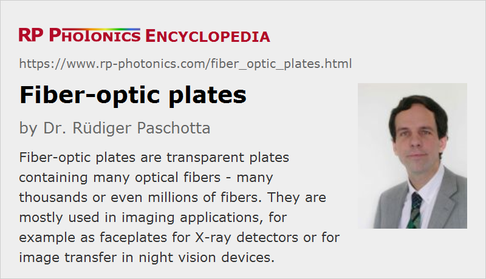

Fiber-optic Plates
Acronym: FOP
Definition: transparent plates containing many optical fibers
German: faseroptische Scheiben
Category: fiber optics and waveguides
How to cite the article; suggest additional literature
Author: Dr. Rüdiger Paschotta
Fiber-optic plates, sometimes also called fiber faceplates, are transparent plates which consist of many optical fibers. The front and back face are typically either rectangular or of round shape. In some cases, they are made very large, covering tens or even hundreds of square centimeters. The thickness may be only a few millimeters, but devices with a length of many centimeters are also available. At a first glance, some fiber-optic plates look like laser mirrors made on a cylindrical substrate.
The property of central importance is the one-to-one image transfer from the input face to the output face, which is accomplished by the fibers connecting many input points to corresponding output points.
Compared with many fiber bundles, fiber-optic plates usually contain much smaller fibers for achieving a correspondingly higher spatial resolution. There can then be millions of fibers contained in such a plate.
Fabrication of Fiber-optic Plates
Fiber-optic plates can be fabricated in the following way:
- In a first step, one draws mono-fibers from an ordinary fiber preform. Compared with ordinary fiber fabrication, one draw the fibers to a larger diameter of e.g. 2 mm.
- One then produces a multi-fiber preform by assembling e.g. 200 mono-fibers, cut to a suitable length of e.g. 2 m. That preform is again drawn to produce a multi-fiber. The size of each fiber is accordingly reduced.
- One can repeat that process once more, i.e., assemble some number of multi-fibers to a preform and draw that. The resulting multi-multi-fiber can contain many thousands of fiber cores.
- For fabricating fiber-optic plates of large diameter, one now assembles many of those multi-multi-fibers to a large boule. One then cuts that boule into slices of suitable length to obtain the rough form of plates.
- Finally, the interfaces need to be further processed with grinding (for surface generation, not necessarily producing flat surfaces) and polishing.
The used optical fibers can be of quite different types. One may use step-index multimode fibers (often silica fibers), having a numerical aperture of 0.2 or 0.4, for example. When using a high-index core glass, the numerical aperture can even be of the order of 1. High-NA plates are often used for imaging.
For optimum image performance, one often inserts some kind of absorbers into the mentioned preforms (see Figure 1). The function of such an extra-mural absorber (EMA) is to eliminate any light which is not guided by the fiber cores, and therefore not useful for the imaging. Such absorbers can be introduced in the form of black fibers, which replace some of the guiding fibers, or thinner black fibers at interstitial locations between the imaging fibers. Another possibility is to use annular absorbing layers around the imaging fibers.
Some fiber-optic faceplates are tapered, i.e., they are drawn at a high temperature to obtain a gradually reduced diameter. Fiber-optic tapers can be useful for matching an image to a smaller image sensor, for example, by applying some magnification. For more details, see the article on fiber-optic tapers.
Applications of Fiber-optic Plates
Most fiber-optic plates are used for imaging applications: for example, in night vision devices and X-ray detectors. The plates are normally made with rather small ordered fibers, providing an accurate image transfer. In contrast to conventional imaging optics based on lenses or mirrors, such a device can be very short; therefore the term zero-thickness image transfer.
It is possible to achieve some kind of (de)magnification by using tapered faceplates (fiber-optic tapers). Also, one can implement image inversion (for compensating the image inversion of an objective e.g. in a night vision device) with a 180° twisted device.
The essential function of a faceplate is often to provide some electrical isolation e.g. between a phosphor screen and an image sensor. (Note that such devices are often operated with high electric voltages, e.g. in image intensifiers of night vision devices.) In case of X-ray detectors, they can also provide some protection of the image sensor against radiation, particularly when made from a glass containing lead.
One can deposit a phosphor directly on a fiber-optic faceplate for optimal coupling of the light into the fibers. Note, however, that not all glasses are compatible with phosphors.
For high image resolutions, one requires very thin fibers. Some devices allow for resolutions better than 100 lines per millimeter. This is lower than with lens-based transfer optics, but a solution with a fiber-optic faceplate can be much more compact – no focusing distance is required – and is also largely free of image distortion. Besides, the light transmission can be fairly high.
When coupling a faceplate to an image sensor (e.g. to a CCD chip), one can usually not associate one fiber with one detector pixel, since the fiber arrangement cannot be sufficiently regular for that. Instead, one uses a few fibers per pixel, so that each pixel can receive roughly the same amount of light. The remaining deviations leads to a possibly disturbing Moiré pattern, which one tries to minimize, e.g. by intentionally creating some angle between the sensor surface and the faceplate.
Suppliers
The RP Photonics Buyer's Guide contains 3 suppliers for fiber-optic plates.
Questions and Comments from Users
Here you can submit questions and comments. As far as they get accepted by the author, they will appear above this paragraph together with the author’s answer. The author will decide on acceptance based on certain criteria. Essentially, the issue must be of sufficiently broad interest.
Please do not enter personal data here; we would otherwise delete it soon. (See also our privacy declaration.) If you wish to receive personal feedback or consultancy from the author, please contact him e.g. via e-mail.
By submitting the information, you give your consent to the potential publication of your inputs on our website according to our rules. (If you later retract your consent, we will delete those inputs.) As your inputs are first reviewed by the author, they may be published with some delay.
See also: fibers, fiber bundles
and other articles in the category fiber optics and waveguides
|  |
If you like this page, please share the link with your friends and colleagues, e.g. via social media:
These sharing buttons are implemented in a privacy-friendly way!